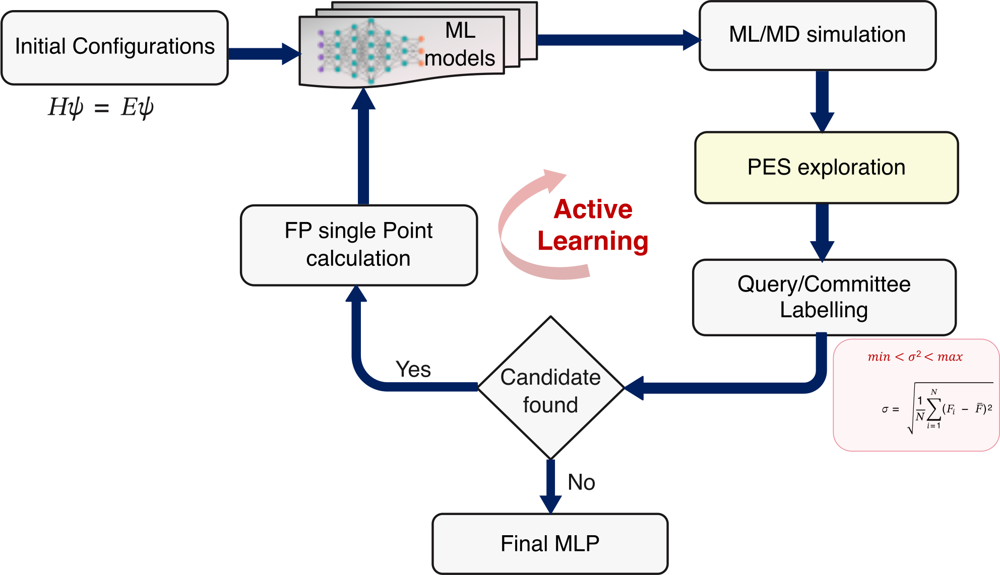

Workflow Overview
SPARC implements an active learning loop for machine learning interatomic
potential (MLIP) development. Each iteration follows three stages that map
directly to sub-directories created inside iter_xxxxxx/:
iter_000000/
├── 00.dft/ ← Stage 1: DFT / AIMD labelling
├── 01.train/ ← Stage 2: MLIP training
└── 02.dpmd/ ← Stage 3: ML-MD + Query-by-Committee
{kind=link}

Stage 1 — DFT / AIMD (00.dft)
Ab initio molecular dynamics (AIMD) or single-point DFT calculations are run
to label new candidate structures. This stage is controlled by the
aimd_setup and dft_calculator sections of input.yaml.
Set aimd_setup.steps: 0 to skip AIMD entirely and jump straight to
training. In this case, place pre-existing trajectory data as
AseMD.traj (ASE trajectory format) inside the 00.dft/ directory
of the current iteration before running.
Stage 2 — MLIP Training (01.train)
num_models independent MLIP models are trained on the accumulated dataset.
Each model is placed in its own training_x/ sub-directory. Controlled by
mlip_setup.training and mlip_setup.input_file.
For fine-tuning from a pre-trained foundation model instead of training from scratch, see Fine-Tuning vs. Training From Scratch.
Stage 3 — ML-MD + Query-by-Committee (02.dpmd)
ML-driven molecular dynamics explores configuration space using the trained
committee of models. The force deviation across models (model_dev_*.out)
identifies uncertain structures as candidates for DFT relabelling in the next
iteration. Controlled by the mlip_setup.MdSimulation block.
How sections in input.yaml map to stages
|
Controls |
|---|---|
|
Input structure file(s) |
|
DFT engine and template for Stage 1 |
|
AIMD run in Stage 1 |
|
Training (Stage 2) and ML-MD (Stage 3) |
|
Optional fine-tuning instead of from-scratch training (Stage 2) |
|
Loop control: iterations, deviation thresholds |
|
Optional geometry sanity checks during ML-MD |
|
Custom output filenames |
Loop termination
The loop runs for active_learning.iteration cycles. It also stops early
if no candidate structures are found in a given cycle (the model has converged
for the sampled region of phase space).
To resume an interrupted run, set learning_restart: true and supply
latest_model pointing to the last frozen model checkpoint.